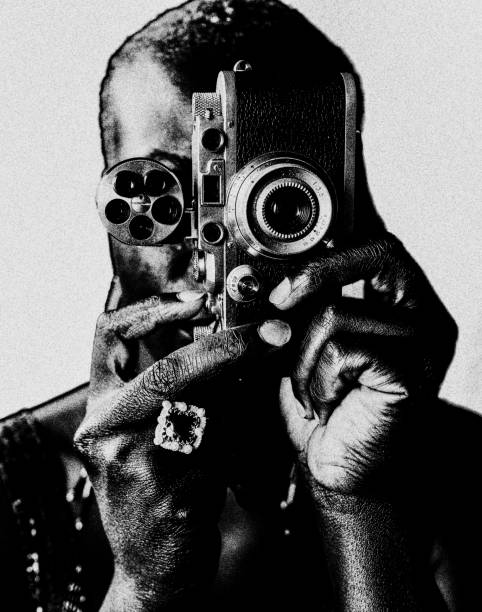
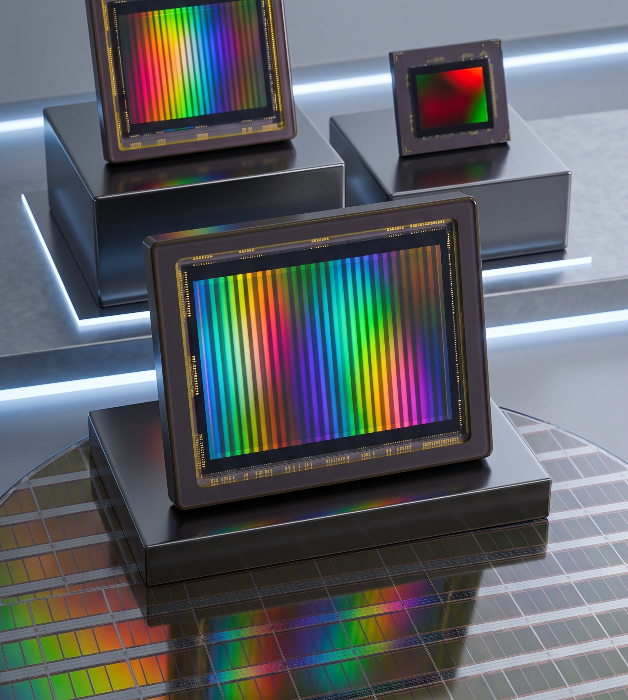
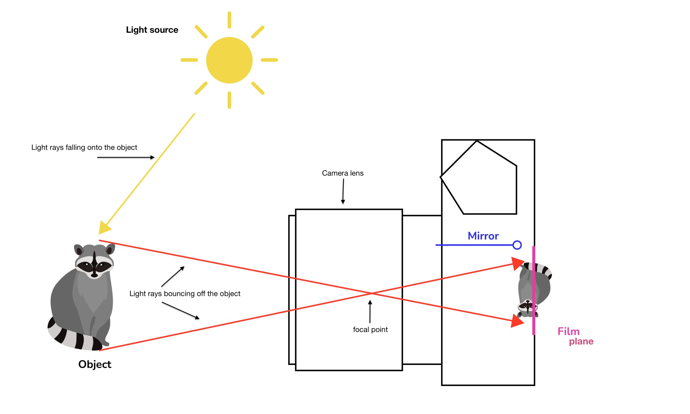

คู่มือฉบับย่อสำหรับทุกคนที่อยากเข้าใจกล้องถ่ายภาพ ตั้งแต่พื้นฐานไปจนถึงเทคนิกที่ใช้งานได้จริง

กล้องถ่ายภาพ หรือ กล้องถ่ายรูป เป็นเหมือนกล่องทึบแสง ที่ทำหน้าที่รับแสงในปริมาณที่เหมาะสมเพื่อใช้ในการสร้างภาพ กลไกและชิ้นส่วนต่าง ๆ ของกล้องทำงานสัมพันธ์กันในการที่จะควบคุมปริมาณแสงไปยังหน่วยรับภาพอย่างถูกต้องแม่นยำ อีกทั้งยังควบคุมความคมชัดของภาพ ตลอดจนอำนวยความสะดวกต่าง ๆ ในการบันทึกภาพ
ความหมายของการถ่ายภาพ มี 2 ประเด็น คือ
1. เชิงวิทยาศาสตร์ หมายถึง การทำปฏิกิริยาระหว่างวัสดุไวแสงกับแสง
2. เชิงศิลปะ หมายถึง การวาดภาพด้วยแสงและเงารวมทั้งการผสมสีเพื่อถ่ายทอดความหมาย ความรู้สึก อารมณ์ หรือทัศนคติ
เซ็นเซอร์ คืออุปกรณ์ที่แปลงภาพที่เห็นด้วยตาเป็นสัญญาณอิเล็กทรอนิกส์ โดยมากแล้วจะเป็นส่วนประกอบในกล้องดิจิทัล และอุปกรณ์ที่เกี่ยวกับภาพอื่น ๆ เซ็นเซอร์ในยุคแรก ๆ นั้นจะมีลักษณะเป็นกระบอกกล้องวีดิทัศน์


1. แสงจากแหล่งกำเนิดแสง (Light Source) กระบวนการเริ่มต้นที่ แหล่งกำเนิดแสง (Light source) ซึ่งในแผนภาพแสดงเป็นรูปดวงอาทิตย์ แหล่งกำเนิดแสงนี้จะปล่อยแสงเดินทางไปยังตัวแบบ โดยมีลูกศรสีเหลืองที่ระบุว่า "Light rays falling onto the object" (รังสีของแสงที่ตกกระทบลงบนวัตถุ)
2. การสะท้อนจากวัตถุ (Object) เมื่อแสงตกกระทบ วัตถุ (Object) (ในภาพคือแรคคูน) แสงจะสะท้อนออกจากพื้นผิวของตัวแบบ การสะท้อนนี้จะเดินทางเข้าหากล้อง ซึ่งแสดงด้วยลูกศรสีแดงและมีข้อความระบุว่า "Light rays bouncing off the object" (รังสีของแสงที่สะท้อนออกจากวัตถุ)
3. การผ่านเลนส์กล้อง (Camera Lens) แสงที่สะท้อนออกมาจะเข้าสู่ด้านหน้าของกล้องผ่าน เลนส์กล้อง (Camera lens) เลนส์จะทำการหักเหรังสีของแสงที่เข้ามา เพื่อนำทางเข้าสู่ตัวกล้อง
4. การตัดกันที่จุดโฟกัส (Focal Point) เมื่อรังสีของแสงเดินทางผ่านระบบเลนส์ แสงจะมาบรรจบและตัดกันที่ตำแหน่งเฉพาะซึ่งเรียกว่า จุดโฟกัส (focal point) เนื่องจากการตัดกันของรังสีแสงที่จุดนี้ ทำให้เส้นทางของแสงกลับด้าน: แสงจากด้านบนของวัตถุจะทำมุมเฉียงลงด้านล่าง และแสงจากด้านล่างของวัตถุจะทำมุมเฉียงขึ้นด้านบน
5. การฉายภาพลงบนระนาบฟิล์ม (Film Plane) รังสีของแสงจะเดินทางต่อไปยังด้านหลังของกล้องจนกระทั่งตกกระทบ ระนาบฟิล์ม (Film plane) (ซึ่งทำหน้าที่เดียวกับเซ็นเซอร์รับภาพในกล้องดิจิทัลยุคปัจจุบัน) เนื่องจากรังสีของแสงได้ตัดกันที่จุดโฟกัส ภาพที่ปรากฏลงบนระนาบฟิล์มจึงถูกฉายออกมาเป็นภาพกลับหัว
6. หน้าที่ของกระจกสะท้อนภาพ (Mirror) ในแผนภาพมีเส้นสีน้ำเงินที่ระบุว่า กระจก (Mirror) ซึ่งแสดงในลักษณะพับขึ้นในแนวนอน ในกล้องสะท้อนภาพเลนส์เดี่ยว (SLR หรือ DSLR) โดยปกติกระจกนี้จะวางตัวในมุมเฉียงลงเพื่อสะท้อนแสงขึ้นไปยังช่องมองภาพ (viewfinder) เพื่อให้ผู้ถ่ายสามารถจัดองค์ประกอบภาพได้ เมื่อกดปุ่มชัตเตอร์เพื่อถ่ายภาพ กระจกจะดีดตัวพับขึ้นอย่างรวดเร็วไปยังตำแหน่งที่แสดงในแผนภาพ เพื่อเปิดทางให้แสงสามารถเดินทางตรงทะลุไปยังระนาบฟิล์มได้